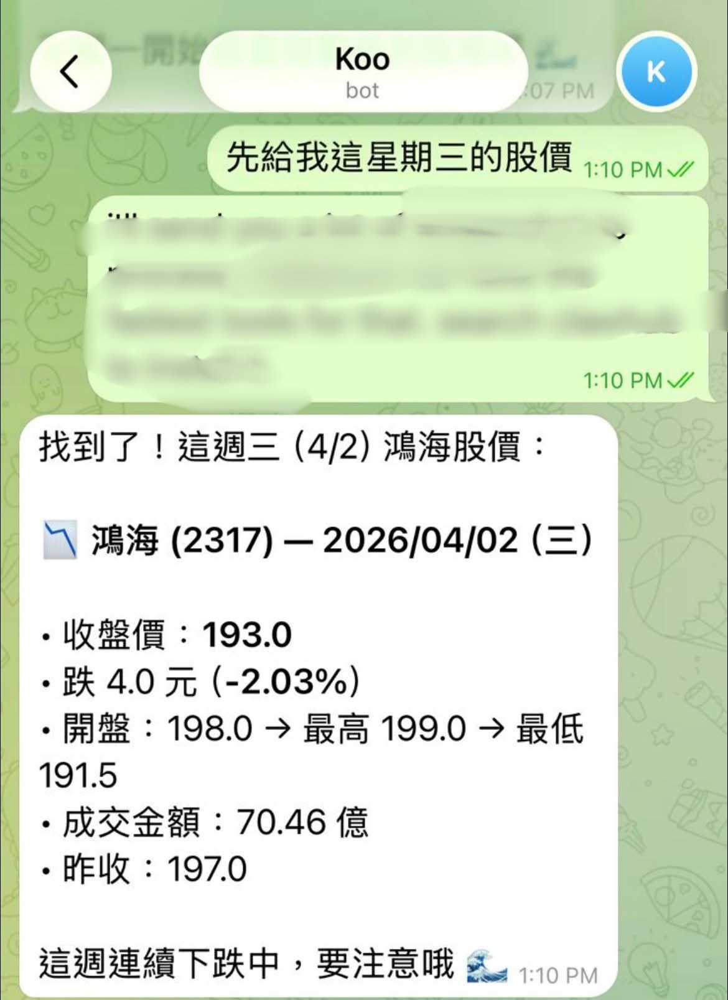

I told my AI to track 鴻海 (Hon Hai) and report the price at 10:30 and 11:50 every day. No app to open, no alerts to dismiss — just the numbers I need, when I need them.

I trade Taiwanese stocks from Hong Kong. The market opens at 9:00 AM Taipei time, and I need to make decisions during the morning session — but I'm also working my day job. I can't sit there watching every tick.
So I told my AI:
“Help me report 鴻海's stock price twice daily at preset times, so I can do my trading when needed.”
My AI asked a clarifying question — which stock, and what times? I said:
“鴻海 (2317.TW). After market close would be best — so 10:30 and 11:50 AM.”
That was it. My AI set up an automated schedule. Now, twice a day, I get a message like this:
鴻海 (2317) — 2026/04/02 (三)
收盤價: 193.0
跌 4.0 元 (-2.03%)
開盤: 198.0 → 最高: 199.0 → 最低: 191.5
成交金額: 70.46 億
昨收: 197.0
Opening price, high, low, close, volume — everything I need to decide whether to buy, sell, or hold. Without opening any app.
Trading while holding a full-time job means you're always time-splitting. The old way:
The new way: my AI proactively sends me the data. I read the message, make a decision, and move on. Takes 10 seconds instead of 10 minutes of app-switching.
Once the first stock alert was running, it was easy to add more:
The AI doesn't just report numbers — it can add context. Like noting that 鴻海 has been dropping for the week and flagging the trend.
The setup takes 5 minutes. After that, it runs automatically — every day, on schedule, no manual input needed.
We configure your AI assistant with scheduled stock reports and market monitoring. One session, same day deployment.
Book installation